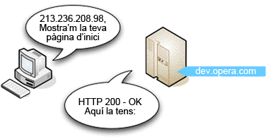
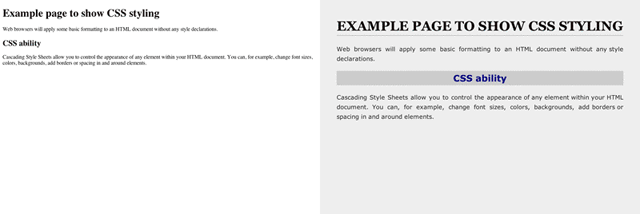

3. Com funciona Internet?
Jonathan Lane. 8 de juliol del 2008 Publicat a: dinàmic, servidor, estàtic, web, HTTP,
Molt de tant en tant és possible aconseguir veure els engranatges i les corretges que actuen entre bastidors. Avui és el vostre dia de sort. Us duré a donar un tomb per darrere dels telers d'una de les tecnologies més interessants que és possible que ja coneixeu bé: el web.
Aquest apartat tracta sobre la tecnologia subjacent que fa funcionar el web:
Llenguatge d'etiquetatge d'hipertext (HTML)
Protocol de transferència d'hipertext (HTTP)
Sistema de noms de domini (DNS)
Servidors web i navegadors web
Contingut estàtic i dinàmic
Són matèries força bàsiques i, encara que la majoria del que aquí s'explica no us ajudarà a construir una pàgina web millor, sí que us proporcionarà el llenguatge adequat per parlar amb clients i d'altres sobre el web. És com el que una institutriu molt intel·ligent va dir una vegada a Somriures i llàgrimes: Quan llegim, comencem per ABC. Quan cantem, comencem per Do Re Mi
. En aquest apartat descriuré breument com els ordinadors es comuniquen realment utilitzant HTTP i TCP/IP, i després ens fixarem en els diferents llenguatges que es combinen per a crear les pàgines web que conformen Internet.
- 3.1. Com es comuniquen els ordinadors a través d'Internet?
- 3.2. Tipus de contingut
- 3.2.1. Text normal
- 3.2.2. Estàndards web
- 3.2.3. Pàgines web dinàmiques
- 3.2.4. Formats que requereixen altres aplicacions o connectors
- 3.3. Pàgines web estàtiques o dinàmiques
- Resum
- Preguntes de repàs
- Lectures complementàries
3.1. Com es comuniquen els ordinadors a través d'Internet?
Per sort, hem mantingut les coses simples per als ordinadors. Quan es tracta del web, la majoria de les pàgines estan escrites utilitzant el mateix llenguatge, l'HTML, que passa d'un lloc a un altre utilitzant un protocol comú: HTTP (hypertext transfer protocol o protocol de transferència d'hipertext). L'HTTP és el dialecte (especificació) comú d'Internet que permet, per exemple, que un equip amb Windows canti en harmonia amb un ordinador que executi la versió més recent i més fantàstica de Linux (¡Do Re Mi!). Mitjançant l'ús d'un navegador web un programari especial que interpreta l'HTTP i entrega l'HTML en una forma llegible pels humans, les pàgines web creades amb HTML i amb qualsevol tipus d'ordinador es poden llegir en qualsevol mitjà, incloent-hi telèfons, PDA i fins i tot en els sistemes de videojocs més populars.
Encara que parlin el mateix llenguatge, els diferents dispositius que accedeixen al web han de tenir algunes normes establertes per a poder parlar entre ells; és com aprendre a alçar la mà per preguntar a classe. L'HTTP estableix aquestes normes bàsiques per a Internet. Gràcies a l'HTTP, un equip client (com el vostre ordinador) sap que ha de ser ell qui iniciï una petició d'una pàgina web des d'un servidor. Un servidor és un ordinador on resideixen les pàgines web; quan escriviu una adreça web al vostre navegador, un servidor rep la petició, troba la pàgina web que desitgeu i l'envia al vostre ordinador perquè es vegi al vostre navegador.
3.1.1. Dissecció d'un cicle de sol·licitud/resposta
Ara que hem vist totes les parts que permeten als ordinadors comunicar-se a través d'Internet, tractaré amb més detall el cicle de sol·licitud/resposta d'HTTP. A continuació es presenten una sèrie de passos numerats perquè pugueu treballar seguint-los i, així, us podré demostrar alguns conceptes de manera més eficaç:
Totes les sol·licituds/respostes comencen quan s'escriu un URL (Universal Resource Locator, Localitzador universal de recursos) a la barra d'adreces del navegador web, com ara http://dev.opera.com. Obriu un navegador i feu-ho ara mateix.
Una cosa que potser no sabeu és que els navegadors realment no fan servir els URL per sol·licitar pàgines web als servidors; utilitzen el Protocol d'Internet o adreces IP (que són gairebé com números de telèfon o adreces postals que identifiquen els servidors.) Per exemple, l'adreça IP d'http://dev.opera.com és 213.236.208.98.
Obriu una nova pestanya o finestra del navegador, escriviu http://www.apple.com i premeu intro; a continuació, escriviu http://17.149.160.10/ i premeu intro: arribareu al mateix lloc. Escriviu http://213.236.208.98 a la barra d'adreces i premeu intro: anireu a parar al mateix lloc que en el pas 1, però obtindreu un error 403 "Accés Denegat" error, això és perquè no teniu permís per a accedir a l'arrel real d'aquest servidor.
http://www.apple.com actua bàsicament com un àlies per a http://17.149.160.10/, però per què? I com? Això és perquè a les persones els resulta més fàcil recordar paraules que llargues cadenes de números. El sistema que fa aquesta feina s'anomena Domain name system (DNS) o Sistema de noms de domini, que és essencialment un directori automàtic complet de tots els ordinadors connectats a Internet. Quan escriviu http://dev.opera.com a la barra d'adreces i premeu intro, aquesta adreça s'envia a un servidor de noms que intenta associar-la a la vostra adreça IP. Hi ha molts ordinadors connectats a Internet, i no tots els servidors DNS tenen un llistat de cada ordinador que hi ha connectat, de manera que hi ha un sistema creat on es pot adreçar la sol·licitud al servidor correcte per atendre-la.
Així, doncs, el sistema DNS cerca la pàgina web www.opera.com, esbrina que es troba a 17.149.160.10 i retorna l'adreça IP al navegador.
L'ordinador envia una sol·licitud a l'ordinador de l'adreça IP especificada i espera obtenir una resposta. Si tot va bé, l'ordinador del servidor envia un breu missatge de retorn al client amb un missatge dient que tot és correcte (vegeu la figura 1) seguit de la pròpia pàgina web. Aquest tipus de missatge està inclòs en un encapçalament HTTP.
Figura 1. En aquest cas tot és correcte i el servidor retorna la pàgina web correcta.
Si alguna cosa va malament, per exemple si s'escriu incorrectament l'URL, en el seu lloc s'obtindrà un error HTTP: el famós error 404 "no es troba la pàgina" és l'exemple més comú que es pot trobar.
Escriviu http://dev.opera.com/joniscool.html: la pàgina no existeix, o sigui que obtindreu un error 404. Proveu-ho amb algunes pàgines, a diferents pàgines web que no existeixin i us retornaran pàgines diferents. Això és deu al fet que alguns desenvolupadors web han deixat que el servidor web només emeti la pàgina d'error predeterminada i d'altres han codificat pàgines d'error personalitzades perquè apareguin quan es retorna una pàgina no existent. Es tracta d'una tècnica avançada que no tractarem en aquesta assignatura, però que afortunadament es tractarà aviat en un article a part a dev.opera.com.
Per últim, una nota sobre els URL: generalment el primer URL al qual s'accedeix en una pàgina web no té un nom d'arxiu real al final (per exemple, http://www.mysite.com/), i a continuació les pàgines subsegüents a vegades en tenen i a vegades no. Sempre accedeixes a arxius reals, però de vegades el desenvolupador web ha configurat el servidor web perquè no mostri els noms d'arxiu a l'URL; això sovint permet aconseguir URL més nets i fàcils de recordar, que condueixen a una millor experiència per a l'usuari de la vostra pàgina web.
3.2. Tipus de contingut
Ara que ja us he ensenyat una sol·licitud/resposta HTTP, vull que us fixeu en els diferents tipus de contingut que poden trobar-se a Internet. Ho he agrupat en 4 tipus: text normal, estàndards web, pàgines web dinàmiques i formats que requereixen altres aplicacions o connectors.
3.2.1. Text normal
Durant els veritables primers dies d'Internet, abans que aparegués qualsevol estàndard web o connector, Internet era principalment imatges i text normal, arxius amb una extensió .txt o similar. Quan es troba un text normal a Internet, el navegador el mostra tal com és, sense cap mena de procés. Encara poden trobar-se fitxers de text normal a pàgines web universitàries.
3.2.2. Estàndards web
Les eines de construcció bàsiques del web són el tres principals estàndards web: HTML (o XHTML, aquí utilitzaré ambdós indistintament per a les nostres finalitats), CSS i JavaScript:
Llenguatge de marcat d'hipertext (HTML) és un nom realment bo pel que fa a definir el seu objectiu. L'HTML és el que s'empra per a dividir un document, especificar el seus continguts i estructura, i definir el significat de cada part (és el que inclou tot el text, etc., que es veu a les pàgines web). Utilitza elements per a identificar els diferents components d'una pàgina.
Els fulls d'estil en cascada (CSS) donen un control total sobre com es visualitza un element.
Canvis de format
Utilitzant declaracions d'estil és molt senzill canviar tots els paràgrafs perquè quedin a doble espai:
line-height: 2em;O bé fer que tots els encapçalaments de segon nivell siguin verds:
color: green;Separar l'estructura del format representa molts avantatges que veurem amb més detall en el següent apartat. Per a demostrar la potència de l'HTML i CSS emprats de manera combinada, la figura 2 mostra a l'esquerra HTML normal, sense cap format afegit, mentre que a la dreta pot veure's exactament el mateix HTML amb alguns estils de CSS aplicats.
Figura 2. HTML normal a l'esquerra, HTML amb CSS aplicat a la dreta.
Per últim, el llenguatge JavaScript aporta funcions dinàmiques a les pàgines web. Es poden escriure petits programes en JavaScript que s'executaran a l'ordinador client i que no requereixen que hi hagi cap programari especial instal·lat al servidor. JavaScript permet afegir algunes funcions bàsiques i interactivitat a les pàgines web, però té les seves limitacions, la qual cosa ens porta a parlar de llenguatges de programació de la banda del servidor i de pàgines web dinàmiques.
3.2.3. Pàgines web dinàmiques
A vegades, quan navegueu per Internet us trobareu pàgines web que no tenen una extensió .html: és possible que tinguin una extensió .php, .asp, .aspx, .jsp, o d'altres extensions estranyes. Tots són exemples de tecnologies web dinàmiques que es poden utilitzar per a crear pàgines web que tinguin seccions dinàmiques: codi que mostra diferents resultats segons els valors que rebi, per exemple d'una base de dades, d'un formulari o d'una altra font de dades. Tractarem aquests tipus de pàgines web al subapartat Pàgines web estàtiques o dinàmiques, tot seguit.
3.2.4. Formats que requereixen altres aplicacions o connectors
Com que els navegadors web només estan equipats per a interpretar i mostrar determinades tecnologies com ara estàndards web, si sol·liciteu un URL que apunta a un format d'arxiu complex o a una pàgina web que conté una tecnologia que requereix connectors (plugins), es descarregarà al vostre ordinador o s'obrirà utilitzant el connector necessari si el navegador el té instal·lat.
Exemples de connectors
Si us trobeu un document de Word, d'Excel, PDF, fitxer comprimit (per exemple, ZIP o SIT), fitxer d'imatges complexes com Photoshop PSD, o un altre fitxer complex que el navegador no comprèn, generalment el navegador us preguntarà si desitgeu descarregar o obrir el fitxer. Ambdues accions generalment tenen resultats similars, tret que la darrera farà que el fitxer es descarregui i a continuació s'obri amb una aplicació que el comprèn, si està instal·lada.
Si us trobeu una pàgina que contingui una pel·lícula Flash, MP3 o un altre format de música, MPEG o un altre format de vídeo, el navegador el reproduirà utilitzant un connector instal·lat, si n'hi ha un d'instal·lat. En cas contrari, se li proporcionarà un enllaç per a instal·lar el connector necessari, o l'arxiu es descarregarà i cercarà una aplicació d'escriptori per a executar-lo.
Naturalment, hi ha algunes àrees grises: per exemple, SVG (Scalable Vector Graphics, gràfics vectorials escalables) és un estàndard web que s'executa de manera nativa en alguns navegadors, com l'Opera, però no en d'altres, com les versions anteriors a la 9 de Internet Explorer. Aquestes versions d'IE necessiten un connector per comprendre els SVG. Hi ha una sèrie de navegadors que inclouen alguns connectors prèviament instal·lats, de manera que és possible que no sigueu conscients que el contingut s'està visualitzant mitjançant un connector i no nativament al navegador.
3.3. Pàgines web estàtiques o dinàmiques
Així, doncs, què són les pàgines web estàtiques i dinàmiques i quina és la diferència entre ambdues? Com en una capsa de bombons, tot es basa en el farciment.
Una pàgina web estàtica és una pàgina web on el contingut, l'HTML i els gràfics, són sempre estàtics —se serveix a qualsevol visitant de la mateixa manera, tret que la persona que ha creat el web decideixi canviar manualment la seva còpia al servidor—, exactament el que hem estat repassant a la major part d'aquest apartat.
Contràriament, en una pàgina web dinàmica, el contingut del servidor és el mateix, però en comptes de ser només HTML, també conté codi dinàmic, que pot mostrar dades diferents segons la informació que subministri a la pàgina web.
Pàgina web dinàmica
Vegeu un exemple de pàgina web dinàmica: aneu Amazon amb el vostre navegador web i cerqueu 5 productes diferents. Amazon no us ha enviat 5 pàgines diferents; us ha enviat la mateixa pàgina 5 vegades, però amb diferent informació dinàmica completada cada vegada. Aquesta informació diferent es guarda en una base de dades, que entrega la informació corresponent quan es sol·licita, i l'envia al servidor web per a inserir-la a la pàgina dinàmica.
Una altra cosa a tenir en compte és que s'ha d'instal·lar un programari especial al servidor per a crear una pàgina web dinàmica. Mentre que els fitxers HTML estàtics normals es guarden amb una extensió de fitxer .html, aquests fitxers contenen codi dinàmic especial a més de l'HTML i es guarden amb extensions d'arxiu especials per a indicar-li al servidor web que necessiten un processat addicional abans d'enviar-los al client (com per exemple que s'insereixin les dades des de la base de dades); els arxius PHP, per exemple, generalment tenen una extensió d'arxiu .php.
Hi ha molts llenguatges dinàmics per a escollir: el PHP que he esmentat abans i d'altres com ara Python, Ruby on Rails, ASP.NET i Coldfusion. En definitiva, tots aquests llenguatges tenen més o menys les mateixes capacitats, com ara parlar amb bases de dades, validar la informació introduïda als formularis, etc., però fan les coses lleugerament diferent i tenen alguns avantatges i desavantatges. Tot es redueix a la forma més senzilla que millor s'adapti.
Resum
Fins aquí el recorregut per la sala de màquines d'Internet. Aquest apartat realment només tracta de passada molts dels temes que inclou, però resulta útil perquè els posa en perspectiva entre ells i mostra com es relacionen i funcionen entre ells. Encara queda molt per aprendre sobre la sintaxi real del llenguatge que conforma l'HTML, el CSS i JavaScript, i això és el que farem a continuació: l'apartat següent se centra en el model d'estàndards web HTML, CSS i JavaScript de desenvolupament web, i fa una ullada al codi de la pàgina web.
Preguntes de repàs
Feu una breu descripció d'HTML i HTTP i expliqueu la diferència entre tots dos.
Expliqueu la funció d'un navegador web.
Navegueu per Internet durant 510 minuts i intenteu trobar alguns tipus diferents de continguts: text normal, imatges, HTML, pàgines dinàmiques com pàgines PHP i .NET (.aspx), PDF, documents de Word, pel·lícules Flash, etc. Accediu a alguns d'aquests continguts i penseu com us els mostra l'ordinador.
Quina és la diferència entre una pàgina estàtica i una pàgina dinàmica?
Trobeu una llista de codis d'error HTTP, enumereu-ne 5 i expliqueu què significa cadascun.
Lectures complementàries
En aquesta assignatura ja no tornarem a parlar dels llenguatges dinàmics, però he creat una llista de recursos en cas que vulgueu llegir-vos-els:
Rails: Fernandez, Obie. (2007), The Rails Way. Addison-Wesley Professional Ruby Series.
PHP: Powers, David (2006), PHP Solutions: Dynamic web development made easy, friends of ED.
ASP.NET: Lorenz, Patrick. (2003). ASP.NET 2.0 Revealed. Apress.
ASP.NET: documentació i guies en línia d'ASP.NET